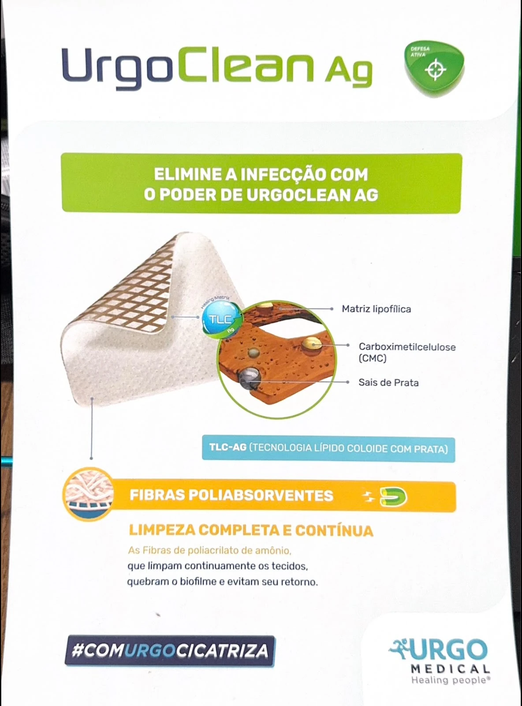
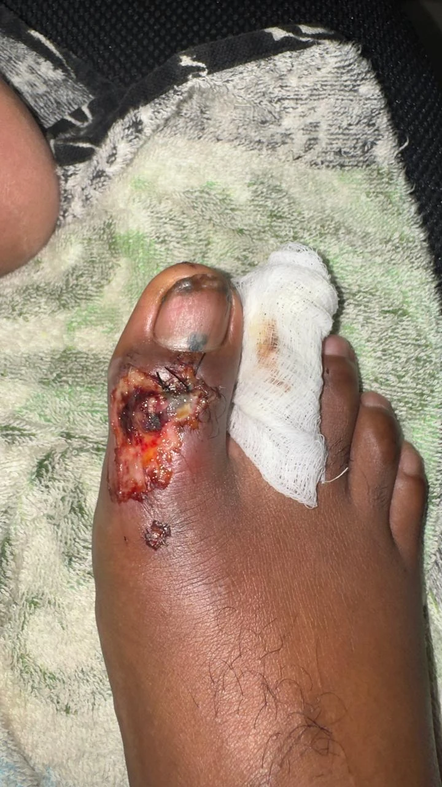
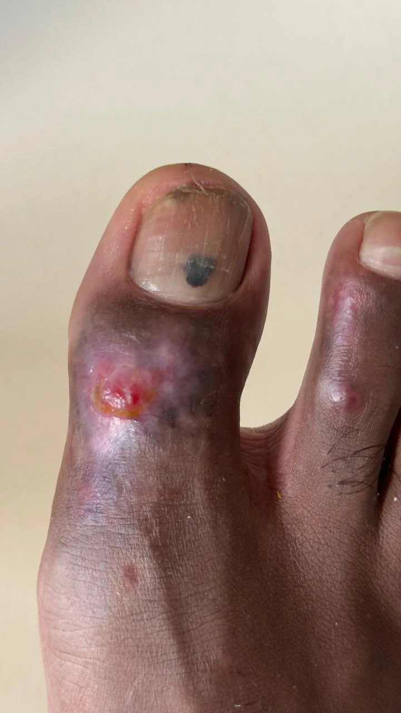

Material Técnico
Cobertura

TECNOLOGIA
Ag
Estudo de Caso Clínico · LABSA
Acompanhamento clínico de paciente masculino, 32 anos, militar da ativa, vítima de queda de motocicleta. Análise da evolução da lesão infectada tratada com a cobertura UrgoClean Ag após estagnação com hidrogel.

Acompanhamento Clínico
Selecione cada fase para conferir o progresso visual do leito da ferida e a evolução terapêutica documentada.

Fotografia clínica de lesão. Clique para exibir.
Nota: a ordem foi organizada como sequência visual presumida. Confirme as datas e a cronologia antes da publicação final.
Antes & Depois
Arraste o slider central para visualizar a evolução rápida da lesão, partindo do estado inicial de infecção (Dia 0) para o leito em fase avançada de epitelização (Dia 12) após o uso do UrgoClean Ag.

DIA 0 DIA 12Comparativo antes e depois. Clique para exibir.
Mecanismo de Ação
A eficácia do produto reside em sua dupla ação: o desbridamento autolítico coeso de esfacelos e a atividade antimicrobiana contínua contra microrganismos patógenos.
Garante um ambiente cicatrizante ideal sob umidade e remoção indolor sem lesar o tecido recém-formado.
Fibras de poliacrilato superabsorventes que realizam o desbridamento mecânico e aprisionam o exsudato/esfacelo.
Liberação controlada e contínua no leito da ferida para combater infecções por amplo espectro bacteriano.
Transforma o esfacelo em gel facilitando a sua drenagem rápida e indolor na troca do curativo.
Fonte desta seção: material impresso do UrgoClean Ag enviado para o projeto. Consulte a embalagem, o fabricante e o profissional responsável antes do uso.
LABSA · Manaus
Este estudo de caso também funciona como uma amostra do que a LABSA pode transformar em um site próprio: produtos, materiais técnicos, localização, parceiros e experiências documentadas.
Loja de artigos hospitalares
Manaus, Amazonas
O que essa experiência pode se tornar